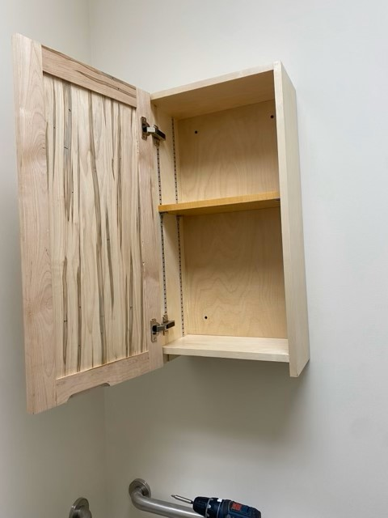
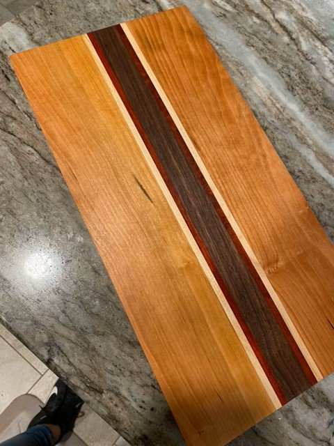
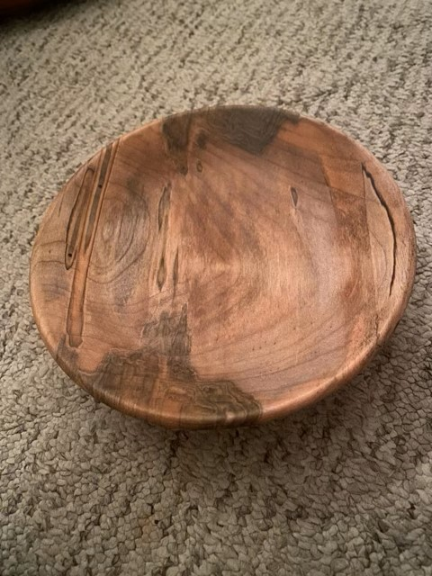
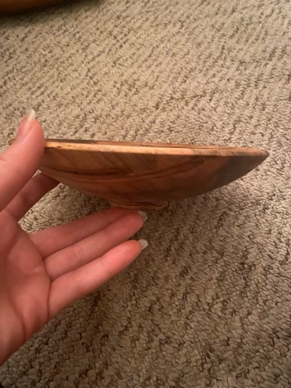
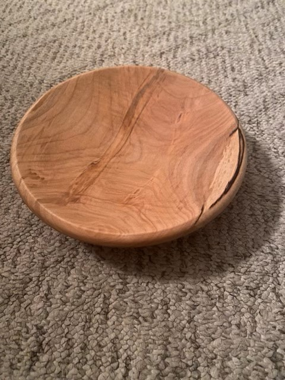
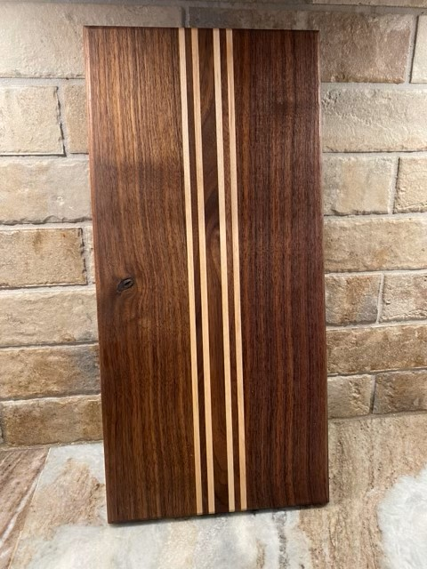

A little showcase
Over the past few years I have been abel to make a handful of things that I can be proud of. Not all of my work has been photographed but here are just a few I wanted to share.
Bathroom cabinet
This was the first big project I worked on with my mentor. It is mostly made from ambrosia maple
My first cutting board
The board has Cherry wood on the outsid, accent strips of maple and padauk, as well as a thicker strip of walnut
My first bowl
This was the first bowl i had the opportunity to make. It is made out of ambrosia maple
Bowl#1
side view of bowl #1
Bowl#2
This bowl was gifted with the intent of being a key dish. it is made from ambrosia maple
Cutting board
This is My favorite cutting board I have made. It is a walnut board with accent strips of maple